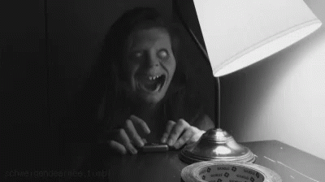
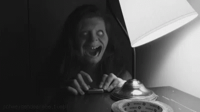

On a chilly October night, Timmy the Turnip was in a big hurry. Halloween was the one night he could go trick-or-treating, and he wanted candy more than anything. But there was one problem: Timmy had no costume!
He dashed into his house, searching for something spooky. First, he tried wrapping himself in toilet paper to be a mummy, but his mom yelled, "Stop wasting toilet paper!" Then he tried putting a sheet over his head to be a ghost, but he kept tripping over it.
Finally, he found an old bucket, poked two eye holes, and wore it as a helmet. "Perfect!" he thought. He ran outside yelling, "Trick or treat!"
But as he looked down the street, he noticed something strange. Every house was... empty. No decorations, no porch lights, and no candy bowls. "Where is everyone?" Timmy whispered. Suddenly, a voice behind him said, "We were waiting for you, Timmy..."
He spun around and saw…a crowd of pumpkins, all glaring at him! "You’re a TURNIP!" they yelled, "This is OUR night!"
Timmy gulped, then looked down at his candy bag and said, “I brought snacks!”
The pumpkins cheered and threw him a huge Halloween party, complete with candy corn, spooky music, and, of course, the Pumpkin Polka dance. And from that night on, every Halloween, Timmy the Turnip was invited back as the honorary “Gourd of the Night.”
 
